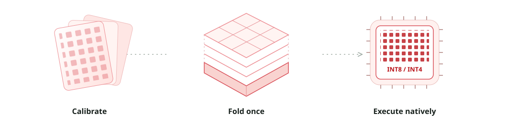
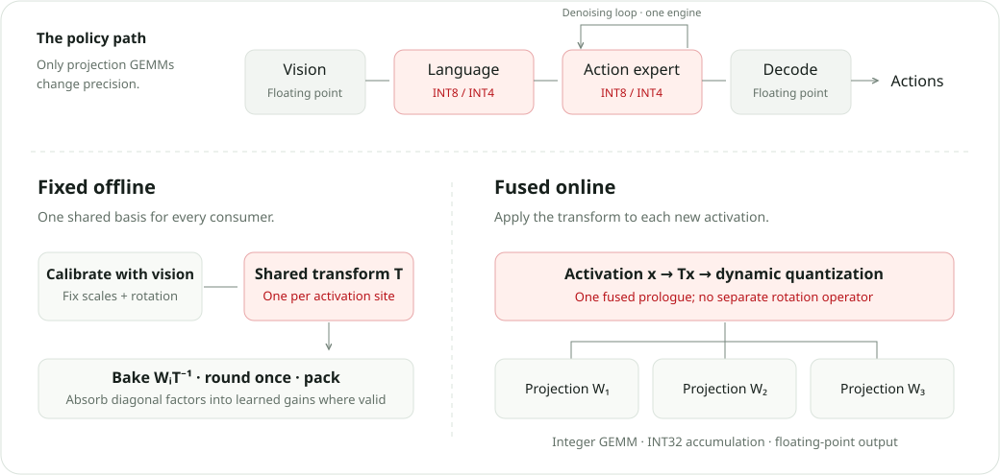

Consistent by construction
Every projection sharing an activation site uses the same transform. Calibration, exported weights, and runtime stay in the same coordinates.
{{subtitle}}

{{speedup}}×
150 → 125 ms per observation-to-action chunk.
GR00T N1.6 · W4A4 vs compiled BF16 · batch 1
{{compression}}×
5,325 → 2,525 MB of serialized engines.
Same Jetson configuration; not peak GPU memory.
{{episode_count}}
{{campaign_count}} LIBERO campaigns × 800 episodes.
{{comparison_count}} reference comparisons across six checkpoints.
Overview
What does lower precision actually buy a robot policy?
FoldQuantVLA fixes a shared change of basis at each activation site, folds it into weights and normalization gains, and rounds once. A common build path produces floating-point, eight-bit, and four-bit engines for the language backbone and iterative action expert.
We evaluate the resulting engines with compiled floating-point controls and 59 closed-loop LIBERO campaigns. The controls separate deployment speedups from precision gains; the rollouts show where offline action fidelity stops predicting task success.
Every projection sharing an activation site uses the same transform. Calibration, exported weights, and runtime stay in the same coordinates.
Custom TensorRT plugins fuse activation transforms and quantization with integer tensor-core GEMMs on desktop and Jetson GPUs.
Compiled controls, device measurements, and closed-loop outcomes reveal both the gains and the configurations that fail.
Method
One transform per activation site. One engine for the denoising loop.

Scaling and rotation define the coordinates once. Every consumer of the activation must agree on that basis before rounding.
Language and expert projections use W8A8 or W4A4. Vision, attention softmax, residuals, and decoding remain floating point.
Dynamic per-token scaling serves each denoising step. Calibration optimality across steps requires the paper’s stated directional-distribution condition.
Real-robot experiments
{{robot_intro}}
Qualitative demonstration area · quantitative real-robot robustness is not claimed by the current evaluation.
Results
Explore the deployment target,
the precision ladder, and the closed loop.
GR00T N1.6 · Jetson AGX Orin · batch 1
Each arm uses the same device and policy. Speedups are relative to the compiled floating-point engine; engine size is the serialized TensorRT plan.
RTX 4070 Ti SUPER · batch 1 · end-to-end median per action chunk
Compiled controls use floating-point TensorRT for GR00T and Evo-1, and torch.compile for π₀.₅ and SmolVLA. The eager-relative ratio includes compilation benefits.
{{desktop_protocol}}
Head-only latency has a different scope from end-to-end latency. Stage medians are not summed into a chunk time.
Four suites · 40 tasks · 800 episodes per configuration · H100 MIG 3g.40gb
{{campaign_count}} of {{campaign_count}} campaigns
Dots show success rate; whiskers are descriptive 95% Wilson intervals. Compare each configuration with its own checkpoint’s BF16 reference. Missing arms are not evaluated.
H100 closed-loop runs use an INT8 datapath with nibble extension for W4A4. Native INT4 execution is measured on sm89 desktop and sm87 Jetson hardware. Statistical non-separation is not evidence of equivalence.
What the controls reveal
The compiled control already supplies 63.2–74.7% of the eager-to-W4A4 reduction on five checkpoints. On SmolVLA, it supplies 99.9%, while uniform W4A4 fails fidelity. Faster execution alone is not a successful deployment.
Table II · matched-scope latency controls
Packed weights shrink the serialized artifact. Vision, unquantized operators, workspaces, and runtime context still occupy memory. The 2.11× Jetson artifact reduction is not a claim about peak GPU memory or power use.
Table III · serialized TensorRT plan sizes
After removing the three arms below 0.99 action cosine, the remaining 26 arms span success differences from −20 to +15 episodes with no significant rank correlation. High cosine can screen a broken configuration without ranking the working ones.
Section VI-D · held-out and closed-loop analysis
32 seeded observations on H100 MIG, with a BF16 reference and a floating-point export control.
32 mid-trajectory observations on RTX 4070 Ti SUPER, disjoint from the 128-observation calibration set.
59 campaigns, each with 40 tasks × 20 initial states. K specifies how many actions execute before replanning.
P1 and P2 cosine values use different observations and accumulation, and must not be merged. LIBERO measures in-distribution task success; these results do not establish real-robot robustness, power savings, or sustained thermal behavior.
Citation
Anonymous manuscript · 2026
{{bibtex}}